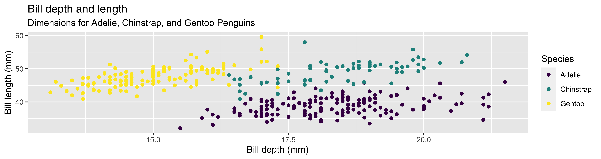
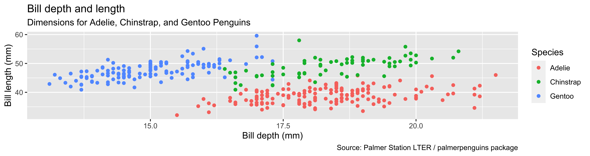
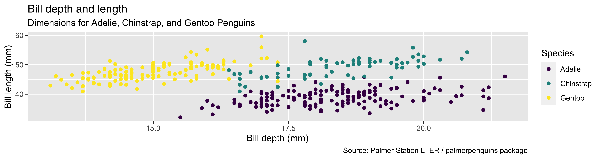
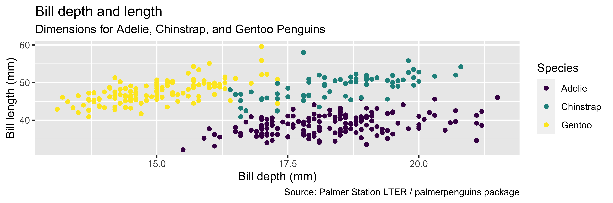
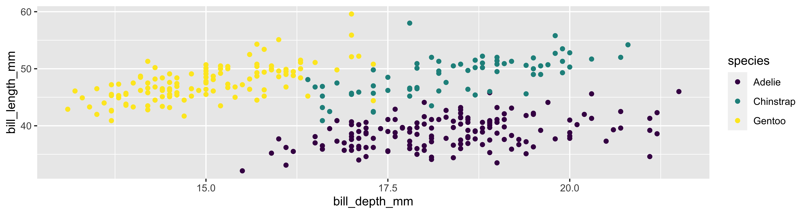
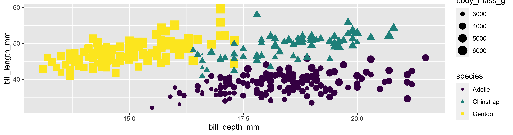
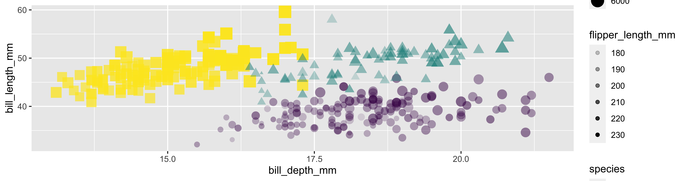
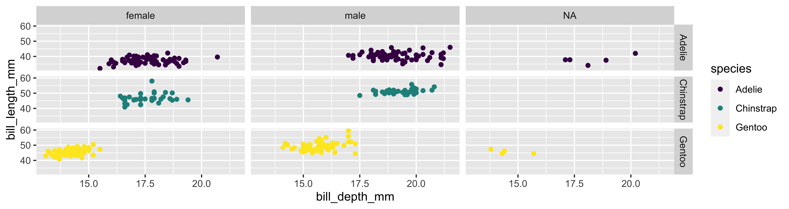
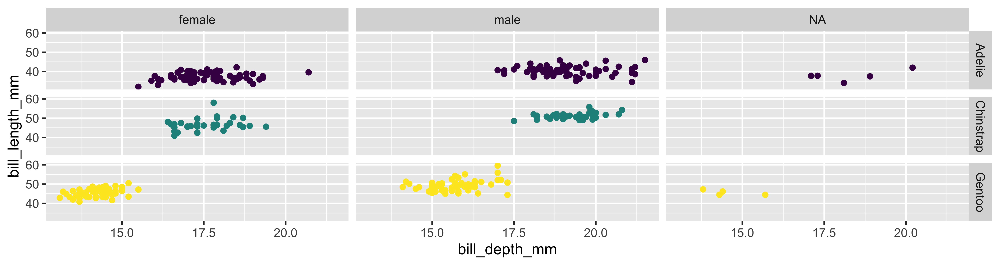

04-ggplot2
Professor Shannon Ellis
1/24/23
Data Visualization with ggplot2 ❤️ 🐧
Q&A
Q:Can we have a demo in class on how to clone our repo and check if our Github submissions submitted properly? I am having trouble doing this.
A: Yes! Let’s do that today.
Q: Does
left_join(a, b)=right_join(b, a)?
A: No. The total information would be equivalent but the order of columns would differ. In the left join, the columns fromawould be first and in the right join, the colums frombwould be listed first. But the actual rows that are joined/included would be the same.
Q: I would still like to know if there is a way to save data sets more often when using functions on them, such as filter. I see we only saved data sets when we use functions like mutate, but why not other functions?
A: You’re allowed to store variables into a new data frame whenever you’d like! Now, the more variables you create, the more to keep track of, so I would encourage you to store your output any time you make a “substantial” change to your data. So, say you do a filter, selection, and mutate to get your data into the format for analysis. I wouldn’t store after each step, but I would store it after I wrote the pipe doing all three. Follow up if this doesn’t clarify!
Q: I think the left_join, right_join, and full_join was pretty confusing.
A: You’re right! It is confusing. We’ll go through more examples and get more practice!
Course Announcements
Due Dates:
- Lab 03 due Friday (1/27; 11:59 PM)
- Lecture Participation survey “due” after class
Course Announcements: - Happy New Year! - Do the GitHub assignment clone + submission demo - Lab02 Notes: - Look at the answer key: - grouping by name and year - can add text outside of code chunks; discuss variable reference - solutions to optional exercises
ggplot2 \(\in\) tidyverse

Data: Palmer Penguins
Measurements for penguin species, island in Palmer Archipelago, size (flipper length, body mass, bill dimensions), and sex.

Rows: 344
Columns: 8
$ species <fct> Adelie, Adelie, Adelie, Adelie, Adelie, Adelie, Adel…
$ island <fct> Torgersen, Torgersen, Torgersen, Torgersen, Torgerse…
$ bill_length_mm <dbl> 39.1, 39.5, 40.3, NA, 36.7, 39.3, 38.9, 39.2, 34.1, …
$ bill_depth_mm <dbl> 18.7, 17.4, 18.0, NA, 19.3, 20.6, 17.8, 19.6, 18.1, …
$ flipper_length_mm <int> 181, 186, 195, NA, 193, 190, 181, 195, 193, 190, 186…
$ body_mass_g <int> 3750, 3800, 3250, NA, 3450, 3650, 3625, 4675, 3475, …
$ sex <fct> male, female, female, NA, female, male, female, male…
$ year <int> 2007, 2007, 2007, 2007, 2007, 2007, 2007, 2007, 2007…The Data
A Plot
ggplot(data = penguins,
mapping = aes(x = bill_depth_mm, y = bill_length_mm,
color = species)) +
geom_point() +
labs(title = "Bill depth and length",
subtitle = "Dimensions for Adelie, Chinstrap, and Gentoo Penguins",
x = "Bill depth (mm)", y = "Bill length (mm)",
color = "Species") +
scale_color_viridis_d()Coding out loud
Start with the
penguinsdata frame
Start with the
penguinsdata frame, map bill depth to the x-axis
Start with the
penguinsdata frame, map bill depth to the x-axis and map bill length to the y-axis.
Start with the
penguinsdata frame, map bill depth to the x-axis and map bill length to the y-axis. Represent each observation with a point
Start with the
penguinsdata frame, map bill depth to the x-axis and map bill length to the y-axis. Represent each observation with a point and map species to the color of each point.
Start with the
penguinsdata frame, map bill depth to the x-axis and map bill length to the y-axis. Represent each observation with a point and map species to the color of each point. Title the plot “Bill depth and length”
Start with the
penguinsdata frame, map bill depth to the x-axis and map bill length to the y-axis. Represent each observation with a point and map species to the color of each point. Title the plot “Bill depth and length”, add the subtitle “Dimensions for Adelie, Chinstrap, and Gentoo Penguins”
Start with the
penguinsdata frame, map bill depth to the x-axis and map bill length to the y-axis. Represent each observation with a point and map species to the color of each point. Title the plot “Bill depth and length”, add the subtitle “Dimensions for Adelie, Chinstrap, and Gentoo Penguins”, label the x and y axes as “Bill depth (mm)” and “Bill length (mm)”, respectively
Start with the
penguinsdata frame, map bill depth to the x-axis and map bill length to the y-axis. Represent each observation with a point and map species to the color of each point. Title the plot “Bill depth and length”, add the subtitle “Dimensions for Adelie, Chinstrap, and Gentoo Penguins”, label the x and y axes as “Bill depth (mm)” and “Bill length (mm)”, respectively, label the legend “Species”
Start with the
penguinsdata frame, map bill depth to the x-axis and map bill length to the y-axis. Represent each observation with a point and map species to the color of each point. Title the plot “Bill depth and length”, add the subtitle “Dimensions for Adelie, Chinstrap, and Gentoo Penguins”, label the x and y axes as “Bill depth (mm)” and “Bill length (mm)”, respectively, label the legend “Species”, and add a caption for the data source.
ggplot(data = penguins,
mapping = aes(x = bill_depth_mm,
y = bill_length_mm,
color = species)) +
geom_point() +
labs(title = "Bill depth and length",
subtitle = "Dimensions for Adelie, Chinstrap, and Gentoo Penguins",
x = "Bill depth (mm)", y = "Bill length (mm)",
color = "Species",
caption = "Source: Palmer Station LTER / palmerpenguins package") 
Start with the
penguinsdata frame, map bill depth to the x-axis and map bill length to the y-axis. Represent each observation with a point and map species to the color of each point. Title the plot “Bill depth and length”, add the subtitle “Dimensions for Adelie, Chinstrap, and Gentoo Penguins”, label the x and y axes as “Bill depth (mm)” and “Bill length (mm)”, respectively, label the legend “Species”, and add a caption for the data source. Finally, use a discrete color scale that is designed to be perceived by viewers with common forms of color blindness.
ggplot(data = penguins,
mapping = aes(x = bill_depth_mm,
y = bill_length_mm,
color = species)) +
geom_point() +
labs(title = "Bill depth and length",
subtitle = "Dimensions for Adelie, Chinstrap, and Gentoo Penguins",
x = "Bill depth (mm)", y = "Bill length (mm)",
color = "Species",
caption = "Source: Palmer Station LTER / palmerpenguins package") +
scale_color_viridis_d() 
Coding out loud
ggplot(data = penguins,
mapping = aes(x = bill_depth_mm,
y = bill_length_mm,
color = species)) +
geom_point() +
labs(title = "Bill depth and length",
subtitle = "Dimensions for Adelie, Chinstrap, and Gentoo Penguins",
x = "Bill depth (mm)", y = "Bill length (mm)",
color = "Species",
caption = "Source: Palmer Station LTER / palmerpenguins package") +
scale_color_viridis_d()
Start with the penguins data frame, map bill depth to the x-axis and map bill length to the y-axis.
Represent each observation with a point and map species to the color of each point.
Title the plot “Bill depth and length”, add the subtitle “Dimensions for Adelie, Chinstrap, and Gentoo Penguins”, label the x and y axes as “Bill depth (mm)” and “Bill length (mm)”, respectively, label the legend “Species”, and add a caption for the data source.
Finally, use a discrete color scale that is designed to be perceived by viewers with common forms of color blindness.
Argument names
Tip
You can omit the names of first two arguments when building plots with ggplot().
Your Turn
Generate a basic plot in ggplot2 using different variables than those in the last example (last example: bill_depth_mm & bill_depth_mm).
Aesthetics
Aesthetics options
Commonly used characteristics of plotting characters that can be mapped to a specific variable in the data are
colorshapesizealpha(transparency)
Color
Shape
Mapped to a different variable than color
Shape
Mapped to same variable as color
Size
Alpha
Mapping vs. setting
- Mapping: Determine the size, alpha, etc. of points based on the values of a variable in the data
- goes into
aes()
- goes into
- Setting: Determine the size, alpha, etc. of points not based on the values of a variable in the data
- goes into
geom_*()(this wasgeom_point()in the previous example, but we’ll learn about other geoms soon!)
- goes into
Mapping vs. Setting (example)
Your Turn
Edit the basic plot you created earlier to change something about its aesthetics.
Faceting
Faceting
- Smaller plots that display different subsets of the data
- Useful for exploring conditional relationships and large data
Various ways to facet
🧠 In the next few slides describe what each plot displays. Think about how the code relates to the output.
Warning
The plots in the next few slides do not have proper titles, axis labels, etc. because we want you to figure out what’s happening in the plots. But you should always label your plots!
Faceting summary
facet_grid():- 2d grid
rows ~ cols- use
.for no split
facet_wrap(): 1d ribbon wrapped according to number of rows and columns specified or available plotting area
Facet and color
Face and color, no legend
geoms
Common geoms
geom 1 |
Description 2 |
|---|---|
geom_point |
scatterplot |
geom_bar |
barplot |
geom_line |
line plot |
geom_density |
densityplot |
geom_histogram |
histogram |
geom_boxplot |
boxplot |
Recap
- Can I explain the overall structure of a call to generate a plot in
ggplot2? - Can I describe
ggplot2code? Can I create plots usingggplot2? - Can I alter the aesthetics of a basic plot? (color, shape, size, transparency)
- Am I able to facet a plot to generate a grid of figures
- Can I describe what a
geomis and do I know the basic plots available?
Suggested Reading
R4DS:
- Chapter 3: Data Visualization